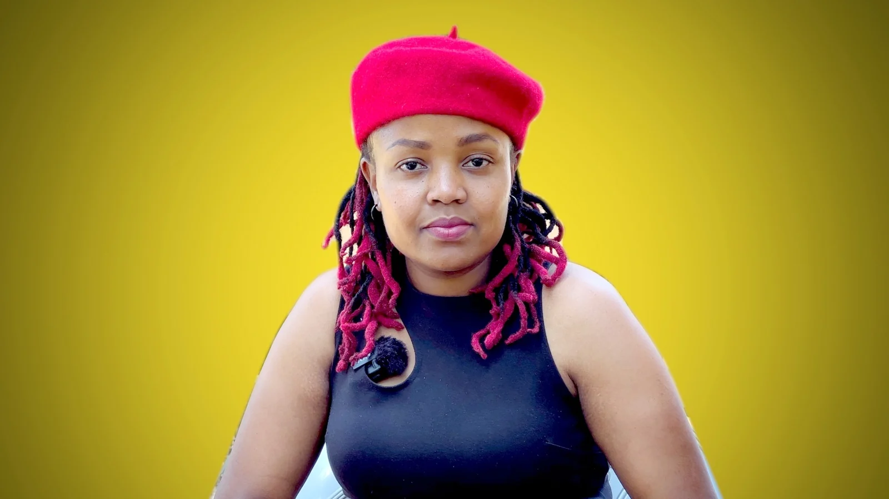
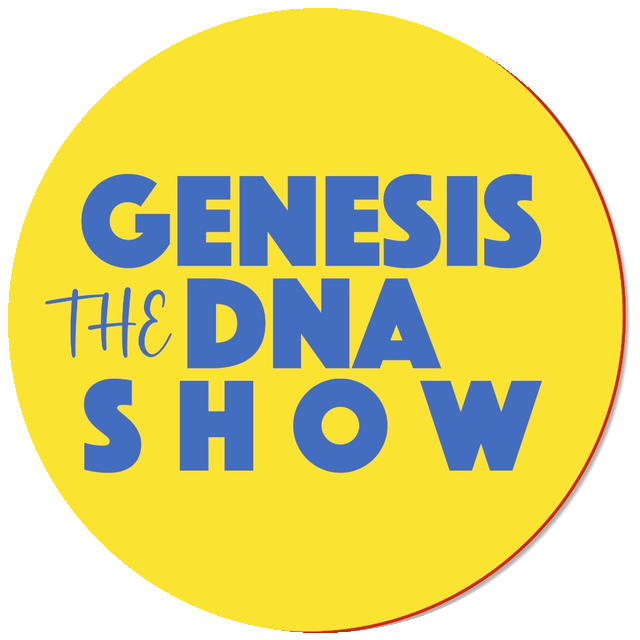
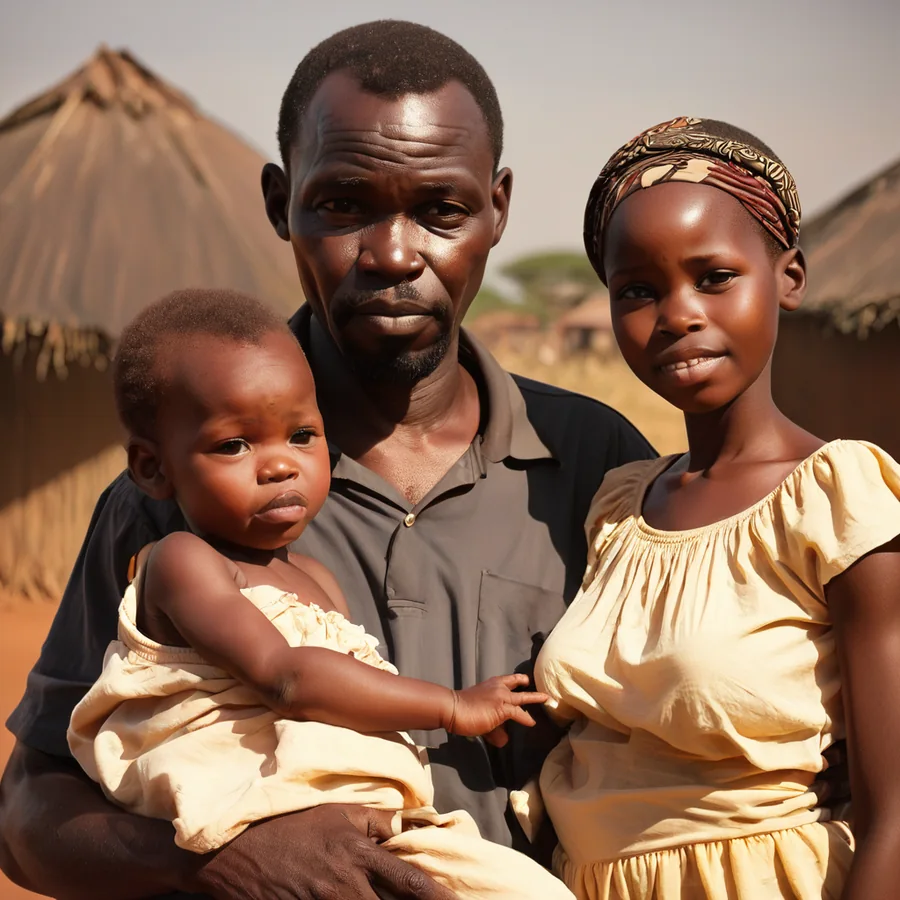
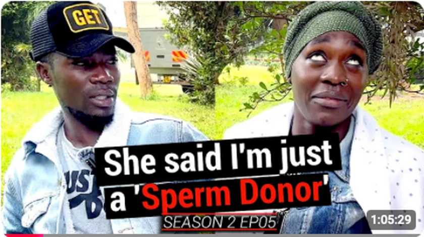
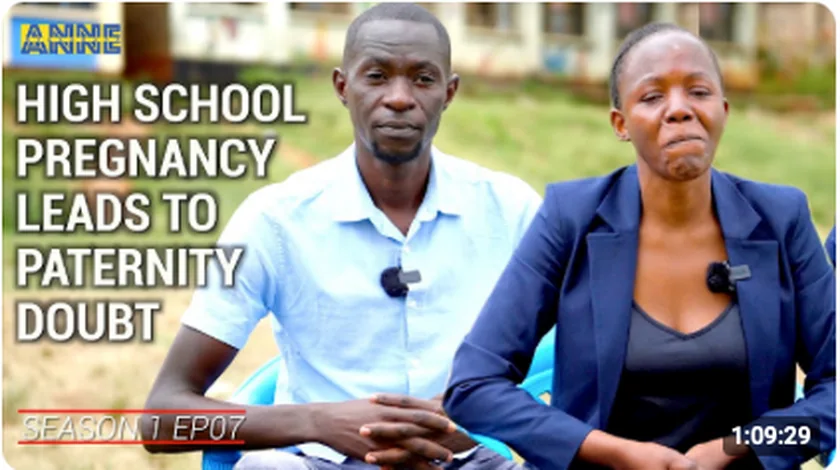
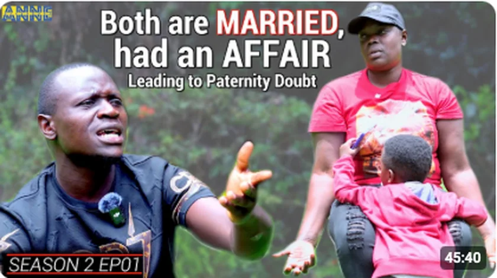
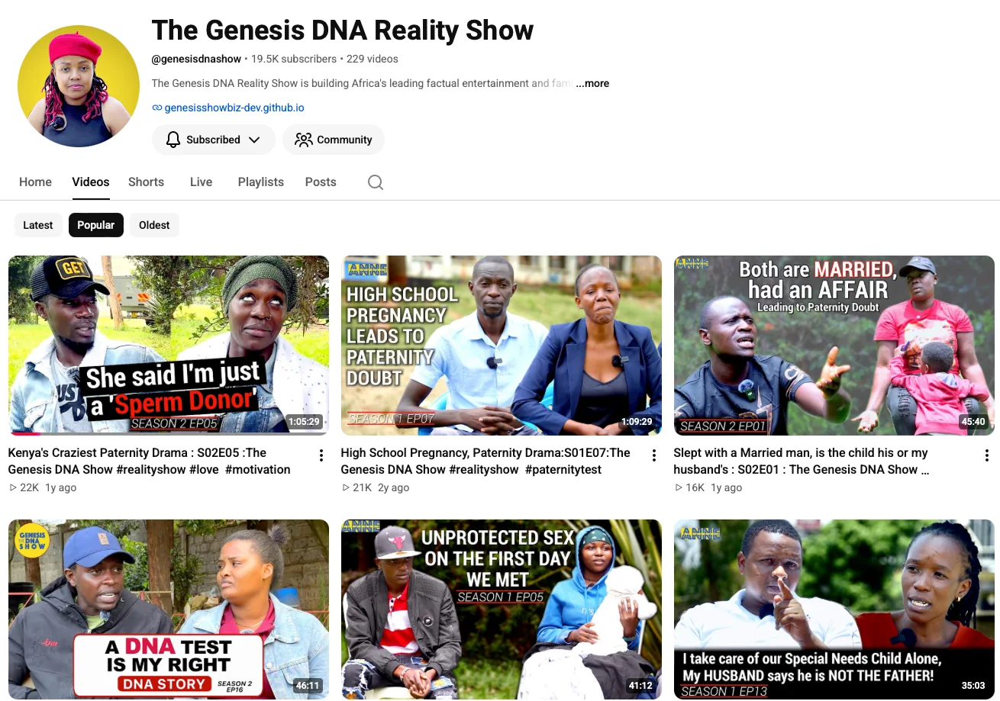
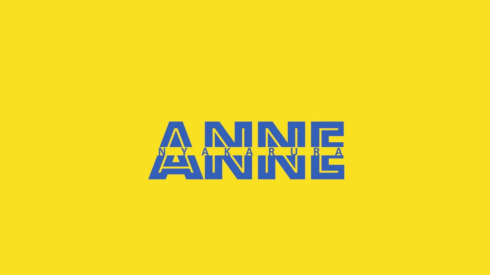
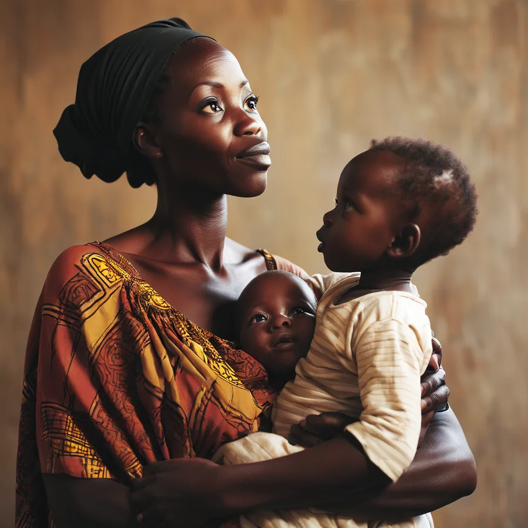

🧬
Sponsored DNA Testing
Qualifying cases can access sponsored paternity testing, subject to eligibility, identification, consent and programme capacity.
The Genesis DNA Reality Show is Kenya’s original dedicated free DNA paternity-testing reality programme. We help families pursue paternity truth through sponsored testing, clear DNA education and responsible storytelling.


Founded in 2024, Genesis DNA brings together DNA access, public education and factual entertainment. We create a space where difficult paternity questions can be approached with evidence, consent and dignity.
The Genesis DNA Reality Show is Kenya’s original dedicated free DNA paternity-testing reality programme.


Genesis DNA does more than reveal a result. We help people understand the process, prepare for testing, and navigate the human questions that surround paternity.
Qualifying cases can access sponsored paternity testing, subject to eligibility, identification, consent and programme capacity.
Consenting participants share their journey through factual entertainment that reflects the real emotions and consequences behind paternity doubt.
We explain samples, identity verification, consent, results and kinship testing in language families can understand.

A paternity dispute that forces a family to confront what fatherhood means when doubt has lasted for years.

A young family confronts unresolved questions and turns to DNA for clarity.

An affair, a child and a difficult question about biological fatherhood.
Our YouTube channel documents paternity journeys, family conversations and DNA education for audiences across Kenya and beyond.
Visit our YouTube channel →
Mama DNA leads Genesis conversations with a direct, human approach — asking the questions families have carried, explaining the testing journey, and keeping the focus on truth, responsibility and the people affected by the result.

NO FEAR · NO FAVOUR · NO BIAS
Paternity uncertainty can affect identity, parenting, financial responsibility and family relationships. Scientific clarity can be important — but children and vulnerable family members should never become collateral damage in an adult conflict.
Learn about DNA testing →
Contact the Genesis DNA team and explain the paternity or kinship concern.
We review the case, participant availability, IDs and child documentation where available.
Required participants attend, complete consent and follow sample-collection instructions.
Samples are processed and consenting participants may share the journey through Genesis platforms.
Contact us for programme enquiries, collaborations, sponsorship, advertising and media partnerships.
📍 Kugeria Court, Hurlingham, Nairobi, Kenya
#MamaDNA · NO FEAR · NO FAVOUR · NO BIAS
Reach an audience engaged with family, relationships, identity and factual entertainment while supporting a programme that expands access to DNA testing.
Start a partnership conversation →